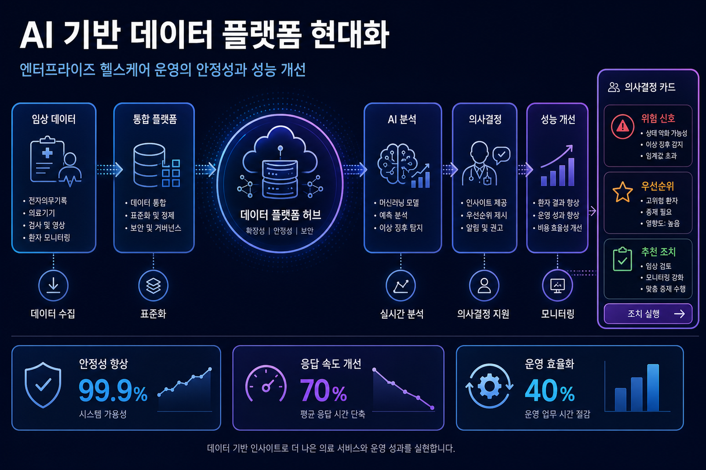
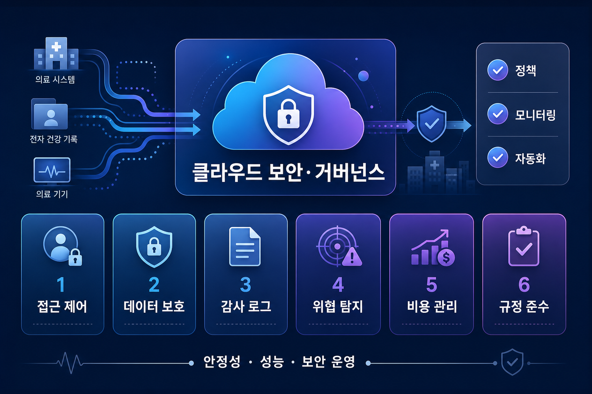
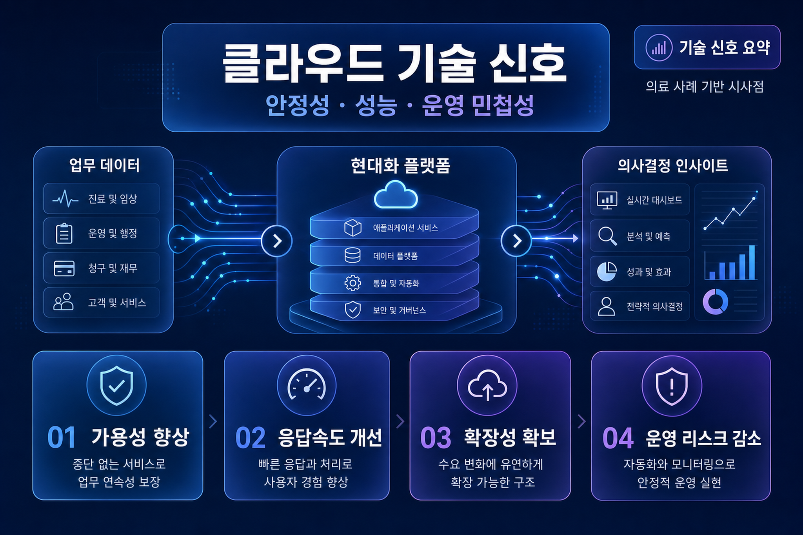

구글 클라우드 블로그 · 데이터베이스 · 2026-06-08
의료 현대화: Alcidion이 안정성과 성능을 높인 방법
AlloyDB가 Alcidion의 Miya Precision 플랫폼 성능과 안정성 개선 사례로 소개되었습니다. 해당 플랫폼은 병원 진료 흐름을 지능화하는 의료 서비스 기반으로 설명됩니다.
원문 확인구글 클라우드 블로그 수집 · 2026-06-09
이번 실행에서 신규 저장된 게시물을 기반으로 작성했습니다. 본문은 이번 실행에서 확인한 원문과 저장 Markdown만 근거로 하며, 원문만으로 단정하기 어려운 항목은 확인 필요로 표시했습니다.
게시물 1건 · 기술 키워드 7개 · 이미지 3개
구글 클라우드 블로그 · 데이터베이스 · 2026-06-08
AlloyDB가 Alcidion의 Miya Precision 플랫폼 성능과 안정성 개선 사례로 소개되었습니다. 해당 플랫폼은 병원 진료 흐름을 지능화하는 의료 서비스 기반으로 설명됩니다.
원문 확인관찰된 게시물의 공통점은 특정 제품 기능 소개가 기업 데이터·보안·운영 의사결정과 직접 연결된다는 점입니다. 다만 각 기능의 출시 상태와 적용 범위는 원문 및 공식 문서로 재확인해야 합니다.
도입 검토는 서비스명 확인에서 끝나지 않고 기존 아이덴티티, 데이터 거버넌스, 네트워크 경계, 비용 추적 방식과 맞물려야 합니다.
국내 기업은 리전, 개인정보·보안 심사, 운영 권한 분리, 계약 조건을 확인해야 합니다. 수집 데이터만으로 국내 제공 범위와 규제 적합성은 단정할 수 없어 확인 필요입니다.



| 관찰된 사실 | 근거 출처 | 검토 포인트 |
|---|---|---|
| 새 게시물 또는 대체 출처에서 구글 클라우드 서비스 변화가 확인되었습니다. | 수집 마크다운 및 원문 링크 | 가격, 리전, 출시 상태, 할당량, 보안 통제 조건 확인 필요 |
| 인공지능·데이터·보안 관련 서비스명이 반복적으로 등장합니다. | 주요 서비스/기술 추출 결과 | 기존 데이터 권한 모델과 감사 로그 체계에 미치는 영향 검토 |
| 원문만으로 국내 적용 가능 범위는 확정하기 어렵습니다. | 원문 메타데이터와 본문 요약 | 국내 리전·계약·컴플라이언스 조건은 별도 확인 필요 |
전체 이미지 프롬프트는 별도 프롬프트 기록 파일에 저장했습니다.
이미지 생성 상태: 이미지 1, 이미지 2, 이미지 3 생성 완료